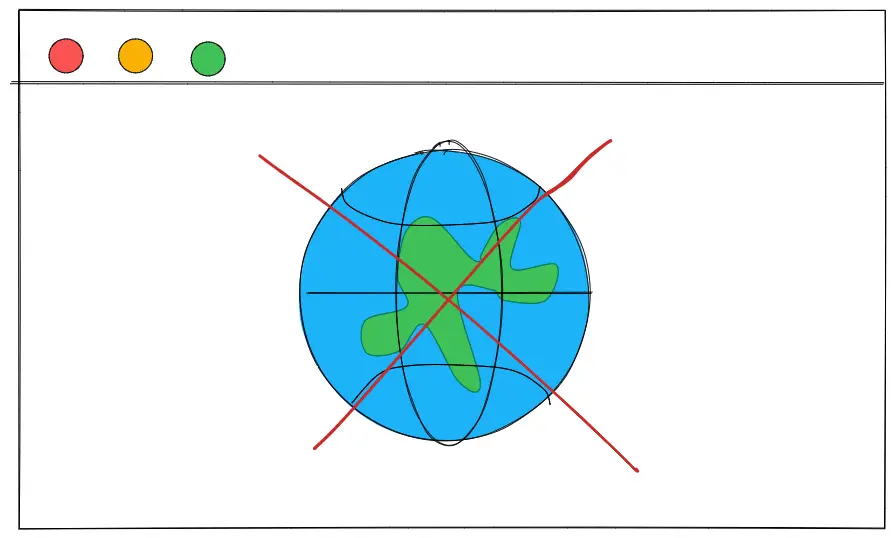
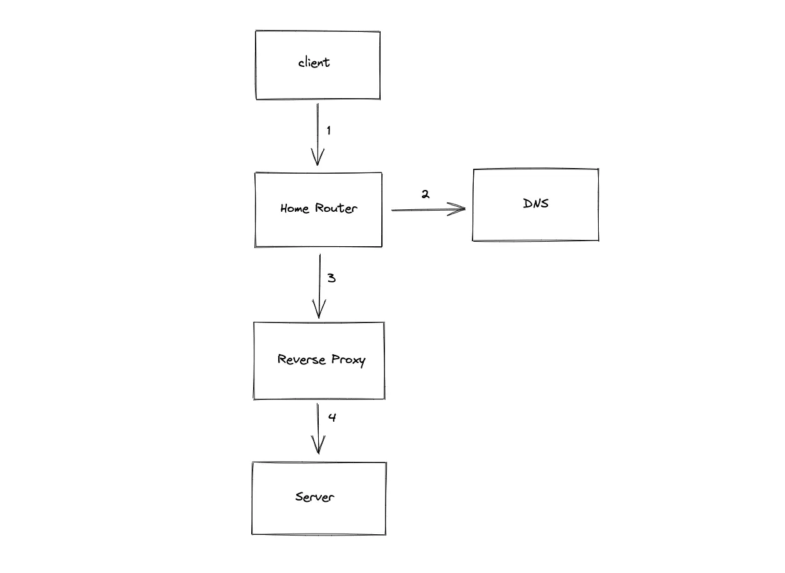
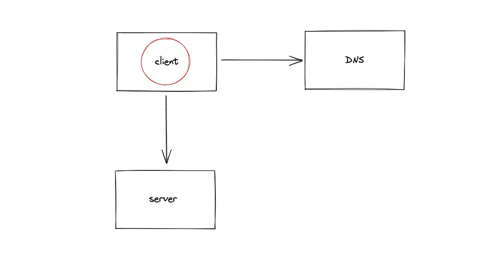
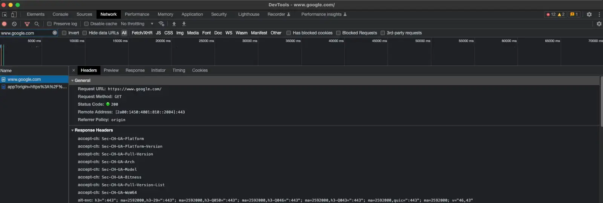
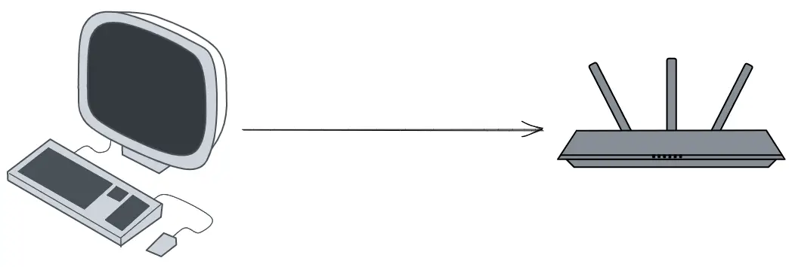
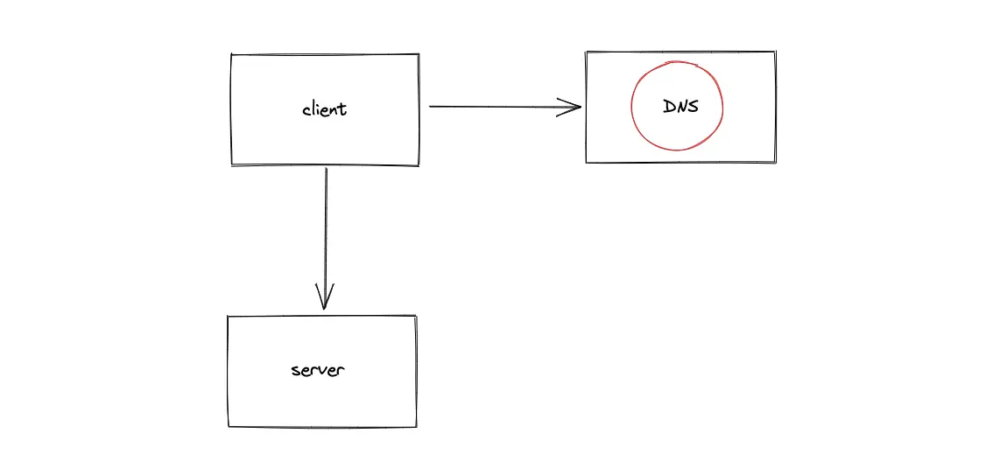
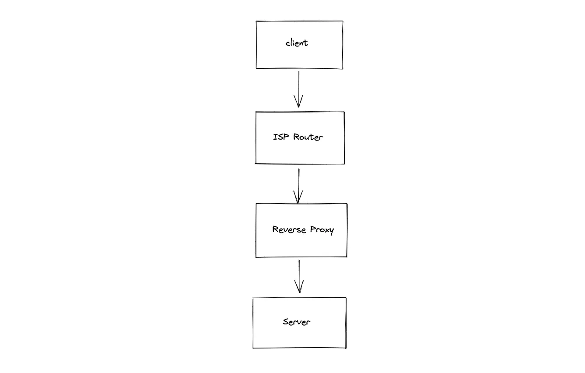
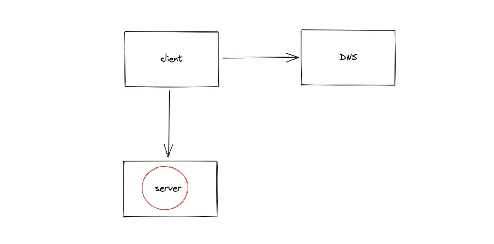

How to Troubleshoot if You Can’t Access a Particular Website?

The target audience for this article falls into the following roles:
- Tech workers
- Students
- Engineering managers
- Product managers
There are no prerequisites to reading this article. I assume that you have used a web browser to navigate across the internet and have basic familiarity with the Terminal. This article does not cover an in-depth guide on how to perform certain operations of debugging.
Disclaimer: The system design questions are subjective. This article is written based on the research I have done on the topic. Feel free to share your feedback and ask questions in the comments.
Download my system design playbook for free on newsletter signup:
Why some websites are not opening in chrome?
You must troubleshoot through different layers of the network components to fix the problem. At a high level, you should check the following failures:
- Client-side
- Local network
- DNS
- Intermediate network components
- Server-side
Terminology
The following terminology might be useful for you:
- DNS: data store that contains the mapping from domain name to IP address
- HTTP: standard application-level protocol used to exchange files on the internet
- Client: web browser or a mobile device that lets you perform different actions on the internet
- Server: a computer that stores files and information in the form of a website
- URL: web address to identify a web resource on the internet
- Router: a device that enables network packet forwarding and routing, and serves as an access point in a local area network
- Proxy server: an intermediary server separating users from the websites
- Firewall: network security device or software that monitors and filters incoming and outgoing network traffic based on certain policies or rules
Introduction
When you type a Uniform Resource Locator (URL) of a website into the browser and press Enter, a multitude of actions is executed in the background.

- The client queries the Domain Name System (DNS) server to find the IP address of the website
- The network data packets are routed through the home router
- The client requests the server using Hypertext Transfer Protocol (HTTP) Request to visit the website
- The data packets of the HTTP Request are routed through intermediate components such as the Reverse Proxy server
- The client connects to the server and fetches the data
Client-side failure
A failure on the client (browser) side can occur due to multiple reasons. Some of the popular client-side failures are analyzed by performing the following operations:

- Invalidate the local client cache
An update of the website can invalidate the client cache for the particular website and make it inaccessible. You can flush the local client cache using browser settings or through a hard refresh of the website.
- Use the incognito mode of the browser
The incognito mode of the browser prevents the browser extensions or cookies from conflicting with the loading of the website.
- Verify the HTTP response status code using the browser DevTools

The network tab of the browser DevTools shows the Hypertext Transfer Protocol (HTTP) response status code from the website. You can identify if it’s a client-side or server-side error by observing the response status code. The status code range 400–499 shows client-side errors, and the status code range 500–599 shows server-side errors.
- Use an alternate browser
In the worst case, your browser is outdated or is not compatible with some specific protocol used by the website. You use an alternate browser and access the same website.
- Access an alternate popular website
You try to access a website that is having downtime due to different reasons such as a server overload. You cannot do anything except wait until the website is back up and running again. You might be able to identify the failure by accessing an alternative popular website such as google.com.
Local network failure
A failure on the local network can occur due to multiple reasons. Some of the popular local network failures are analyzed by performing the following operations:

- Validate your internet connectivity
You should ensure that client has access to the internet. Use the client to access a popular website such as google.com to verify internet connectivity.
- Verify the network adapter of your computer
You use the ping tool to verify if the network adapter of your computer is up and running. You may run the following command on the Terminal:
You reboot the computer to bring the network adapter up and running again.
- Try an alternate network
You access the website from a mobile device or the client, which is connected to another network. If you can access the website, it is your home network problem.
- Check the home router
You can usually find the default Internet Protocol (IP) address of the home router on the label attached to the router. You can use the ping tool to validate if your client can reach the home router by running the following command:
If the home router cannot be reached using the ping command, you can soft reset or hard reset the home router.
- Use a cabled network to the router
You can connect your client to the home router using an Ethernet cable. The Wireless Local Area Network (WLAN aka WiFi) might be down due to a router problem.
- Verify firewall or proxy server settings
You should verify the configuration of the local firewall or proxy server. The documentation of the firewall software should give further insights to troubleshoot. You could disable the proxy server and retry accessing the website.
Further system design learning resources
Download my system design playbook for free on newsletter signup:
DNS failure
The failure of the Domain Name System (DNS) connectivity can occur due to multiple reasons. Some of the popular DNS connectivity failures are analyzed by performing the following operations:

- Verify the DNS connectivity
Use one of the following tools to verify if the DNS resolution works as expected:
dig google.com
nslookup google.com
dig: Domain Information Groper
nslookup: Name server lookup
- Switch to an alternative DNS server
You can try an alternate DNS server and verify if you can access the website. For example, try Google DNS (8.8.8.8).
- Flush the DNS cache
The website might update its IP address. The DNS cache on your client or the cache on your home router might be pointing to an outdated IP address. You can force flush the cache on the client and the home router.
Intermediate network components failure
Multiple intermediate components exist in a large-scale system. For example, Internet Service Provider (ISP) routers, and Content Delivery Networks (CDN). A failure of the intermediate components might occur due to multiple reasons. Some of the popular failures of intermediate components are analyzed by performing the following operations:

- Verify if the client can reach the server
Identify the IP address of the server through DNS resolution. You can use the ping tool to check if the Internet Control Message Protocol (ICMP) packets sent from the client reach the server. You run the following command on the Terminal:
- Identify the defect component in the network path
You can use the traceroute tool to identify the hops in the network path from the client to the server. The traceroute output should help you to narrow down the failing component. For example, the failing component might be the CDN or the Reverse Proxy server.
- Reroute the network traffic
If one of the intermediate components in the network path is failing, you reroute the network traffic. You use a Virtual Private Network (VPN) to reroute the traffic and verify if you can access the website.
Server-side failure
A failure in the DNS connectivity may occur due to multiple reasons. Some of the popular DNS connectivity failures are analyzed by performing the following operations:

- Verify the HTTP response status code
The HTTP response status code range (500–599) confirms a server-side failure.
- The server is nonfunctional
In large-scale systems, there are multiple servers or intermediate components to meet the incoming load demand. If the server you are trying to reach is down, you can use a VPN to reach another server of the same website (assuming there is a geographical separation of servers).
- The client cannot reach the server
You use either the ping tool or the traceroute tool to verify if the client can reach the server.
Summary
Systematic troubleshooting lets you narrow down the root cause behind failed access to a public website.
What to learn next?
Download my system design playbook for free on newsletter signup:
Questions and Solutions
If you would like to challenge your knowledge on the topic, visit the article: Knowledge Test
License
CC BY-NC-ND 4.0: This license allows reusers to copy and distribute the content in this article in any medium or format in unadapted form only, for noncommercial purposes, and only so long as attribution is given to the creator. The original article must be backlinked.
References
- MDN web docs HTTP response status code, Mozilla.org
- What is DNS, Cloudflare.com
- Router explained, Techtarget.com
- Networking Tools, Tecmint.com